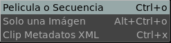

El Menú de Abrir Archivo

El menú de Abrir Archivo te permite abrir una pelicula o una secuencia de imágenes.
Tambien permite cargar una sola imagen en vez de toda la secuencia.
Y permite cargar un Clip de Metadatos XML para manejo de ACES LUT.